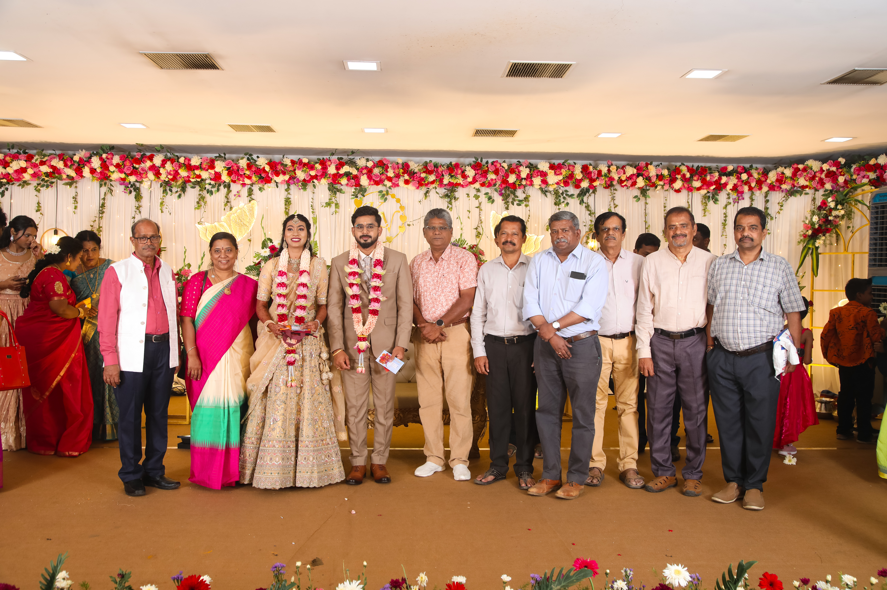

The wedding of Dr. S. Niranjini, M.Sc., Ph.D., daughter of Dr. M. Sekar, and Mr. V. Kamalnath, B.E., M.B.A., was solemnised on Saturday, 4 July 2026, at ACS Mahal, Nellikuppam Road, Nadhivaram, Guduvancheri.
Surrounded by family members and well-wishers, the couple was united in a graceful and traditional ceremony.
TTPA extends its warmest congratulations and heartfelt blessings to the newlyweds for a joyful, harmonious and prosperous life together.
